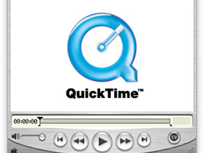

Light My Fire: Video Furnace and online access for moving image archives
For the Access to Moving Image Collections class (MIAS 250), the midterm consisted of a two-part paper discussing the situation at UCLA’s Instructional Media Collections and Services (IMCS). The IMCS is preparing for a major overhaul on their access center, the Instructional Media Lab (IML). The first half of the midterm was an analysis and suggested improvements for the new IML.
The second half of the midterm, included below, was an evaluation of the legality and practicality of using a video delivery vendor, Video Furnace, to stream moving image material from IMCS collections to students. The paper needed to base the current IMCS situation in the larger context of streaming content for moving image archives.

-
-
We need to have a conversation about the legal regime in which we would like to live, and then do what we can to help bring that world into being.
-
– Rick Prelinger [1]
No one wants to conduct research at the library anymore. Students write papers based only on what they can find on the web. If a film or video clip isn’t online, no one cares if it exists. As inflammatory and simplistic as the above three statements are, all three reflect realities that can be backed up by current literature across the fields of library and archival studies, critical studies and mainstream publications. And doubtless anyone who reads them will feel a strange combination of concurrence, remorse, and inspiration to change the reality they represent.
In a current age of clearance culture, moving image archives are stuck between what Jack Valenti has called the race between “the delivery dream and the piracy nightmare.” [2] It is difficult to envision a community of online archives with joyously streaming, easily accessible content for all. In a recent report, David Pierce outlines a strategy for archives to develop an online presence by identifying content that is not restricted by copyright or other permissions, and then created curated access points to that content, similar to the model of the Internet Archive; “curated websites are the best way to deliver content because they provide multiple points of entry for novice users, while still providing content for the experienced researcher.” [3] But even this carries the potential for backlash. Archivists still must consider the privacy of represented people, places and situations. Archives with significant collections of amateur works and home movies face the potential risk of exposing personal details of the lives of those films’ subjects. How does an archive remain relevant in such a context, pleasing rightsholders and those represented in their collections while simultaneously embracing new technologies and user needs?
There are potential solutions on the horizon by way of new video delivery technologies that are responding to these same user needs. As an example, several major universities, government organizations and private companies are using a video-over-IP system called Video Furnace. Video Furnace encodes MPEG files in real time, for immediate delivery to multiple users through a static multicast IP network. Users do not require any proprietary software, and the files are streamed in such a way so that there is no local storage of the media on the end user’s machine. These end users are overwhelmingly satisfied with the usability of the product, a fact which Patricia O’Donnell, the Manager of UCLA’s Instructional Media Collections and Services (IMLS) has publicly stated on the product’s website; “Video Furnace works exactly as it's supposed to - it is fool proof from the standpoint of the user, and technical problems have been virtually non-existent.” [4]
So, could moving image archives use Video Furnace? Whether an archive could successfully implement and maintain the use of such a delivery system for their collections will depend on its individual priorities and existing mechanisms for digitization. Video Furnace, at the admission of their sales team, is more beneficial for the end user than for the access administrator since it requires a significant amount of bandwidth as well as local storage on hard drives. Staff members tasked with digitizing and uploading content must knowledgeable about analog-to-digital conversions and storage necessities. For an archive that is understaffed and under funded, that still that uses the “destination research center” model of access, and has no digitization equipment, Video Furnace might not be feasible. In order to limit the access of the materials only to particular users, the archive would also have to maintain an online authentication system. In addition to the above reasons, it would need to make an additional investment in the actual licensing of the product.
Conversely, if an archive (or library, museum or cultural center with moving image holdings) has already invested some time and money into purchasing or researching this equipment, has the means to harness an already-existing (or easy to implement) authentication system, and has at least one staff member who is versed in analog-to-digital conversions and storage, Video Furnace would be a fantastic way to make those time and resource investments into an online reality. Once an archive has the technical specifics and digitization workflow streamlined, the issue of server and delivery implementation is fairly user-friendly for the administrator. At that point, the more ominous question of copyright and legality would be a larger concern.
The implementation of the Video Furnace system at UCLA’s IMLS caused extensive internal discussion and debate over issues of legality and copyright. Most of the IMLS collection consists of copyrighted material, so the question of whether it has the legal right to provide a “digital copy” to teachers and students remains hazy. The Digital Millennium Copyright Act (DMCA) and the TEACH Act were designed as provisions to Section 110(a) of the Copyright Act for educators and librarians - to “to meet the demands of the Digital Age” (DMCA) [5] and to “facilitate and enable the performance and display of copyrighted materials for distance education.” (TEACH) [6]. But whether these acts clarify copyright issues or ease the burden of unnecessary clearances for institutions like IMLS is questionable. As the American Library Association (ALA) points out, the DMCA “tilts strongly in favor of copyright holders.” [7] According to Kenneth Crews, although the TEACH Act aims to create clarity and focus for institutions as to their rights, its restrictive legalese has the “ironic result … that fair use—with all of its uncertainty and flexibility—becomes of growing importance.” [8] Refreshingly, the IMLS decided that its use of the materials was entirely in the realm of fair use, and that, if challenged by rightsholders, it would use that defense in a courtroom setting.
On the surface, it would appear that this route might not be as feasible for public sector archives that have relationships and donor deposit agreements with major studios, a sentiment which Peter Decherny has reflected; “It requires both a degree of technical competence and the support of academic institutions to venture into the shaky legal territory of fair use—both significant barriers.” [9] There is a significant dearth of available (copyrighted) feature films online, which indicates that the majority of such archives have chosen the safe route as far as their rightsholder relationships are concerned. In the current “clearance culture,” this makes sense in the meantime. But it doesn’t have to stay that way forever.
At a level less obsequious than not making copyrighted assets available online at all because of a fear of “copyright maximalism” [10] is a willingness to work with studios and donors who own the copyright for material. Many factors point towards a future where studios will see the streaming of their assets online as an asset and not a liability, as long as there are effective controls in place for such delivery. Jon Lewis recently outlined several reasons why this trend is inevitable, one of them being that the MPAA is partnering up with major institutions like Microsoft and Comcast “in order to better monitor and control and eventually profit from the Internet delivery of feature films.” [11] Some of the issues that have been brought to the surface in the Writer’s Guild strike, where the issue of online revenue is prevalent, may also have the effect of expediting this process.
The mission of moving image archives does not typically include facilitating revenue streams for studios, but the argument could be made that restricting access to those materials almost entirely is just as much a violation of that same mission. Many archives also contain film and video material that is not only copyrighted by major studios, but is obscure enough that its likelihood of being offered for sale commercially is slim. If archives are offering a service -- broader access to that studio or rightsholder’s material that it is not their priority to make available themselves -- sanctioned streaming of their material could eventually become mainstream. It could conceivably even become an activity that is funded BY said studios.
If this were to become a reality, the streaming model set in place by Video Furnace is an ideal method of online delivery for archives. Rightsholders would have less of a justification to protest because of concerns about users having free digital copies of their material, because the material is never physically present on users’ computers. Ironically, Pierce’s strategies for archives to enhance visibility of their offline collections by drawing attention to curated online content could work here in the favor of the studio. If archives were able to provide sanctioned access to older or obscure films, then they would be providing a service for the studios connected to those films.
In his report about the TEACH Act, Kenneth Crews recognizes that librarians (and, by extension, those in related professions like archivists) are in a unique position to learn about, interpret and disseminate information about copyright and fair use.” [12] In terms of moving images, the studios are probably willing to be educated and have options presented to them by the moving image archives community. If there is a technological mechanism that might make such options feasible, archives should be looking to embrace and not reject them as possibilities. For public domain materials where such privacy is questionable, or in the case of amateur and orphan works, Video Furnace could conceivably be used to test out the functionality of such access mechanisms. If successful, this test could open up opportunities for future streaming of copyrighted material that is cleared for archival use with the rightsholders.
As an example of such potential in effect, the ASIFA Animation Archive is preparing for a massive dissemination of digitized cartoons to libraries, museums and educational institutions via licensed server access. The company is mSoft, a company whose primary business is providing asset management for production companies who need to access video from multiple locations. The fact that companies like mSoft are willing to work with an archive like ASIFA shows that there will be an upsurge of alternatives for digitized, streaming video content for archives to choose from. In the case of ASIFA, the board of directors of the archive’s sponsoring institution (ASIFA-Hollywood) is partially made up of representatives from the major animation studios. ASIFA’s plan is to make the server’s contents available to the studios first, as a resource for their employees. If the studio approves of the mechanism for use in other contexts like libraries, ASIFA will be in a unique position at the forefront of providing digital access to copyrighted materials, in cooperation with, as opposed to in opposition with, rightsholders.
Rick Prelinger has stated that the ubiquity of YouTube and Google Video is in danger of leading “to a public misperception about what archives ought to be doing and what they actually do. This may mean that fewer younger scholars and media makers look to established archives for research and production.” [13] The expansion of available online content unquestionably has the ability to change the way archives are perceived by the public. Under the right circumstances, it could create a domino effect that increases archives’ relevance, leading to more opportunities for preservation funding and thus perpetuating a healthy cycle.

1. Rick Prelinger, "Remix or Rollover: Archival Paradoxes in Century 21." Visions and Voices: the USC Arts and Humanities Initiative. Remixing the Archive. Annenberg Center for Communication, Los Angeles. 4 Nov. 2006.
2. Qtd in Jon Lewis, "’If You Can't Protect What You Own, You Don't Own Anything’: Piracy, Privacy, and Public Relations in 21st Century Hollywood," Cinema Journal 46, no. 3 (Spring 2007), 147.
3. David Pierce, Expanding Access to Moving Image and Audio Collections in the Digital Age - Strategy and Recommendations (Library of Congress, Motion Picture, Broadcasting and Recorded Sound Division; UCLA Film & Television Archive, 2007): 36.
4. Patricia O’Donnell, Video Furace 2008: Customers. http://www.videofurnace.com/cust/cust.php (accessed February 4, 2008)
5. ALA, “DMCA: The Digital Millennium Copyright Act,” American Library Association. http://www.ala.org/Template.cfm?Section=multitypelibrary&template=/ContentManagement/ContentDisplay.cfm&ContentID=144541 (accessed February 15, 2008).
6. Kenneth Crews, “New Copyright Law for Distance Education: The Meaning and Importance of the TEACH Act,” Prepared for: the American Library Association, Copyright Management Center, September 30, 2002. http://www.copyright.iupui.edu/teach_summary.htm (accessed February 14, 2008).
7. ALA
8. Crews
9. Peter Decherney, "From Fair Use to Exemption," Cinema Journal 46, no. 3 (Spring 2007), 122.
10. Rick Prelinger, "Archives and Access in the 21st Century" Cinema Journal 46, no. 3 (Spring 2007): 117.
11. Lewis, 150.
12. Crews
13. Prelinger, “Archives and Access,” 116.

Paper Excerpts
Friday, March 14, 2008
